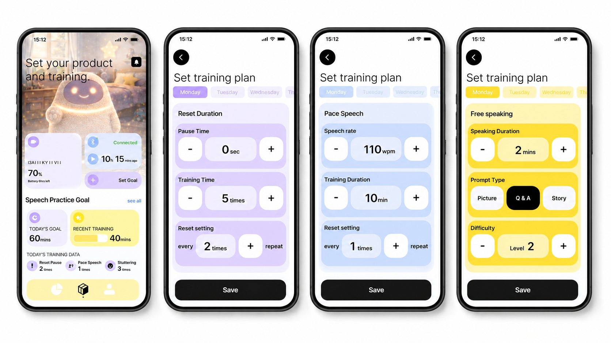
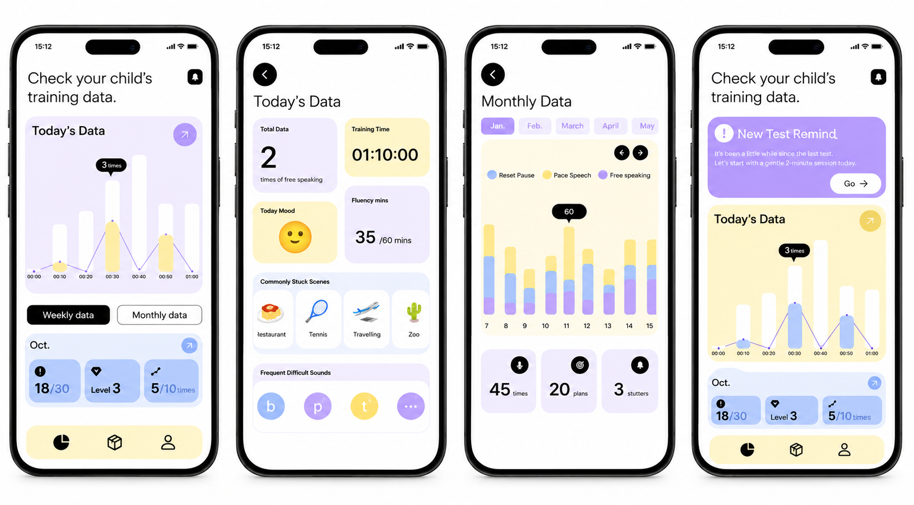
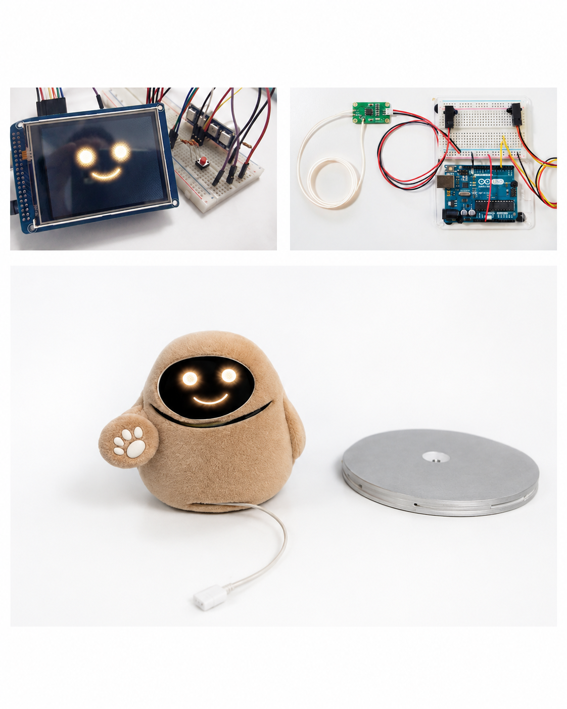
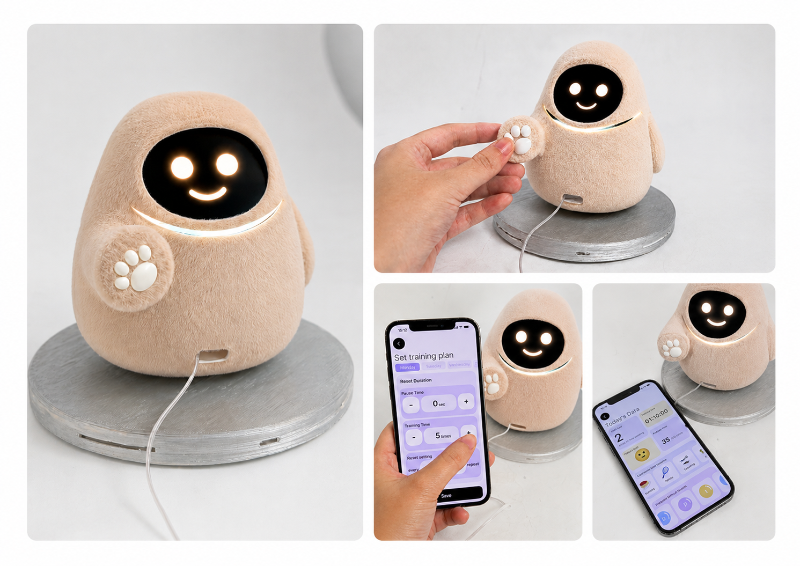

Insight 01
Stuttering support is emotional, not only technical.
Children need tools that help them feel calmer before speaking, not just tools that measure fluency.
Portfolio Case Study
A soft interactive companion and app system designed to help children who stutter practice speech training at home with lower anxiety, more consistent routines, and gentle progress feedback.
The project explores how a physical companion and a parent-facing app can work together as a calmer, more approachable home-practice system.
UX Research / App Design / Product Design / Physical Prototyping
Figma / Arduino / Physical Model / User Interview
Stuttering Training / Child-Friendly CBT / Parent Support / Home Practice
Stuttering is not only a speech fluency issue. It can include repetition, prolongation, and speech blocks that interrupt speaking and make everyday communication feel unpredictable.
For children, the experience can also involve avoidance, embarrassment, body tension, and anticipatory anxiety before speaking situations.
Current treatment often depends on clinical sessions and repeated home practice. Families need tools that make practice feel consistent, emotionally safe, and easier for parent support.
Research showed that pressure changes the speaking experience. Public speaking, phone calls, meetings, and presentations can increase anxiety and avoidance.
Children may show tension, lip trembling, hesitation, and difficulty starting sounds. The social environment often shapes how difficult a speaking moment feels.
"I want tools that reduce the anxiety of anticipating my stutter, not only correct my speech."
Daniel represents a school-age child who needs private, low-pressure training and clearer feedback for parent-supported practice.
Persona
Profile
The strongest design opportunity was connecting emotional comfort with practical training structure.
Children need tools that help them feel calmer before speaking, not just tools that measure fluency.
Parents want to understand whether training is working, but too much data can make the system feel clinical and stressful.
A soft physical companion can make repeated training feel less like therapy and more like a daily routine.
The physical product supports the child emotionally, while the app helps parents manage training routines and progress.
The final direction became a two-part system: a parent-facing app and a child-facing physical companion.
Large app mockups are shown on a pure white background and kept exactly as provided.
Connection status and training plan screens help parents prepare the practice routine.

Daily and monthly views help parents understand practice consistency and progress patterns.

The physical prototype combines screen feedback, Arduino-based sensing, a soft body, and a detachable base for daily home practice.

The product photography is shown as a clean gallery without changing the robot, app screen, hand, cable, lighting, base, or background inside the photo.
The final prototype combines a soft plush companion with a parent-facing mobile app. The device gives children gentle emotional feedback through a smile screen, light cue, and tactile button, while the app supports training setup, progress tracking, appointment booking, and calming resources.
